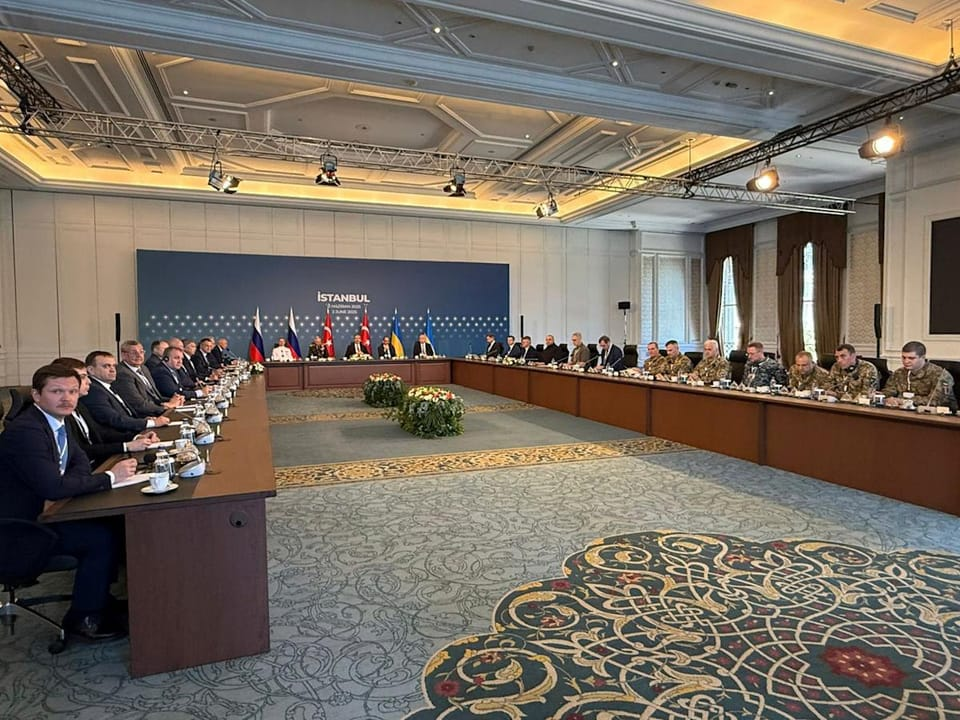

世界苦茶06月03日新闻 | 40条 | 韩国大选今日投票

韩国大选今日投票 | 美国要求多国提交贸易方案 | 俄乌和谈俄提出不可能的条件 | 中国对拉美五国免签 | 太原发生越野车冲撞事故 | 两名日本人在大连被杀害
每天三件事：
苦茶数据
美元兑人民币：7.19（昨日7.21，前日7.20）
美元兑日元：142.94（昨日143.47，前日144.28）
上证指数：3362（昨日3347，前日3355）
标普500指数：5935（昨日5911，前日5912）
比特币：105240（昨日104928，前日103971）
布伦特原油：64.83（昨日64.27，前日62.78）
中国新闻
• 两名日本人在大连遭人杀害，中国籍嫌疑人涉嫌杀人已被当地警方控制： 消息人士称，辽宁警方5月25日联系日本驻沈阳总领事馆称“大连市内有两名日本人被杀害”。有关案发原因，警方称是“熟人间的商业纠纷”。日中消息人士亦表示“很可能是私人纠纷”。遇害二人年龄等信息尚未公布，但领事馆已确认其中一名男性死亡，并通知了遗属。
• 英关切黎智英案等问题 ：英国负责印太事务的外交部政务次长韦斯特访问香港，就壹传媒创办人黎智英案件，以及在英港人被针对等议题表达关切。韦斯特上星期五在社交平台X上发文说，她当天在香港与政务司司长陈国基会面时，重申了英国对黎智英案件、在英港人受到针对，以及一名英国国会议员近期被拒入境等事件表达严重关切。韦斯特说，英国希望看到香港作为一个开放的国际城市蓬勃发展，并强调了继续就双方共同关心的议题推进对话的重要性。她认为，无论双方达成共识或是出现分歧，坦诚交流都至关重要。
• 工信部批新能源内卷 ：中国新能源汽车产业5月底再掀价格战，中国工业和信息化部和汽车工业协会表态反对无序价格战后，中国汽车技术研究中心董事长安铁成说，汽车行业亟须加大力度整治“内卷式”竞争，以避免造成行业经营效益下滑等问题。据中新社报道，安铁成认为，“内卷式”竞争会造成汽车行业经营效益下滑、产品质量和售后服务风险等问题。他举例称，2024年汽车行业利润率仅为4.3%，2025年一季度进一步下滑至3.9%，低于制造业平均水平。此外，“内卷式”竞争造成的零部件采购价连年按10%至15%比例持续下降，上游经营恶化，很难避免供应商在某些方面降低质量要求。下游经销商经营恶化甚至部分倒闭，造成售后服务的及时性、便利性、可靠性下降。
• 许其亮因病逝世 ：中共中央军委原副主席许其亮星期一因病逝世，享年75岁。据新华社报道，中国共产党第十八届、十九届中央政治局委员，中央军委原副主席许其亮同志，因病于2025年6月2日中午12时12分在北京逝世，享年75岁。公开资料显示，许其亮1966年7月入伍，1967年7月加入中国共产党，2007年6月被授予空军上将军衔。
• 韩行长表示，中美谈判影响亚洲 ：韩国中央银行行长李昌镛在一场活动上说，中美贸易谈判的结果将对整个亚洲的经济体造成影响，强调其影响远超双边层面。据彭博社报道，李昌镛星期一在韩国首尔举行的一场韩国央行会议上说：“当我们实际衡量美国关税对我们的影响时，通过中国产生的间接影响也非常重要，因为我们与中国在供应链方面高度互联。”李昌镛指出，其他经济体在评估美国关税带来的冲击时，也必须考虑美中因素。“中美谈判如何推进，对整个亚洲的经济体来说很重要”。
• 太原越野车冲撞调查中 ：网传中国山西省太原市在星期一凌晨发生越野车冲撞事件。中国媒体报道，太原警方已接到报警，正在调查。极目新闻报道，根据网民发布的视频，事发太原市小店区一商家门口，一辆路虎越野车前进和倒退时，有冲撞物品的行为，路人纷纷避让，也有人试图拉开路虎车门。有网民说，事发在星期一凌晨零时5分左右，暂不清楚是否有人受伤。极目新闻致电附近多个商家，接线人员未正面回应。
• 中欧东通道班列破2000列 ：中国官方通报，中欧东通道班列今年首五月开行超2000例。中新社星期天引述中国铁路哈尔滨局集团有限公司消息报道，截至5月31日，今年前五个月经中欧班列“东通道”通行班列突破2000列。中欧班列“东通道”由满洲里、绥芬河、同江铁路口岸组成，截至目前，通行线路已达27条，可通达波兰、德国、荷兰等14个国家，联通中国长沙、郑州、成都、苏州等60余个城市。运输货物涵盖电器产品、日用百货、农副产品等12大品类。
• 中央督察揭统计造假问题 ：中国官方披露，国家统计局统计督察组向七省区市和三个国务院部门反馈常规统计督察意见，指出“隐形和新型统计造假问题显现”等问题，其中包括安徽凤阳县有关统计数据失实问题，三名党员干部被处理。中共中央纪委国家监委网站星期天发布一篇题为《贯彻落实中央纪委四次全会精神 深化纪检监察监督与统计监督协作配合》的文章。文章提到，今年3月，中国国家统计局会同相关部委联合印发了《关于建立健全防治统计造假刚性制度的实施方案》，强化追责问责纪法衔接、统计执法与执纪工作的贯通协同。
• 中纪委通报违规吃喝致死 ：中共中央纪律检查委员会通报，湖北省黄冈市黄梅县、安徽省安庆市宿松县千岭乡两地发生中共党员干部在学习教育期间违规吃喝并致人死亡案例。中纪委星期天发布通报，公开两起党员干部在学习教育期间违规吃喝、严重违反中央八项规定精神典型问题。其中一起发生在湖北省黄冈市黄梅县。通报称，成都市金牛区政府党组成员、副区长张建返回湖北祭祖，当地的中铁二局房地产集团有限公司中共党委书记、执行董事黄小松安排该公司接待人员向明辉到武汉租用车辆、携带酒烟为张建提供服务。
• 中国对5国试行免签 ：中国官方通报，从星期天起，再对五个国家试行单边免签。这是中国首次对拉美和加勒比海地区国家推行免签政策。综合新华社和中国央视新闻报道，中国将从2025年6月1日至2026年5月31日，对巴西、阿根廷、智利、秘鲁、乌拉圭持普通护照人员试行免签政策。上述五国持普通护照人员赴华经商、旅游观光、探亲访友、交流访问、过境不超过30天，可免办签证入境。
• 中科院表示，八成女生不愿生育 ：中国科学院一项研究称，过半受访大学生认为婚育不重要，且有超过八成的受访女大学生接受结婚但不生孩子。综合金融界和财新网报道，中国科学院心理研究所与社会科学文献出版社联合发布中国国民心理健康发展报告，其中《2024年成年人与在校大学生婚育观调查报告》指出，18岁至24岁的年轻成年人，特别是大学生群体，普遍对恋爱、婚姻和生育表现出较低的意愿。调查是基于研究团队在去年3月至6月对31个省年龄范围在16岁至30岁的5万5781名在校大学生的问卷调查。
亚太印太新闻
• 台称中國施压第一岛链 ：台湾国安人士称，中国大陆5月在黄海、东海、台海和南中国海部署规模异常庞大的机舰队，显示正在对第一岛链进行极限施压。台湾《自由时报》和中时新闻网星期一引述不具名国安人士报道上述消息。台国安人士说，大陆军方5月1日至27日在第一岛链进行全区域的极限式施压，军事或灰色地带行为包括全岛链的大范围部署，在黄海、东海、台海、南中国海，日均部署50至70艘不等的各式军舰或公务船，搭配数百架航次的各型军机不断袭扰，还有直升机飞越钓鱼台空域、韩国离于岛识别区等。
• 旺中涉统战将依法查处 ：台湾陆委会指控旺旺中时媒体集团“配合中共对台统战宣传”，将依两岸人民关系条例查处后，民进党立法院党团干事长吴思瑶说，两岸人民关系条例的规范很清楚，并强调若旺中踩到台湾法治红线，应当支持陆委会的作为。综合《自由时报》和Newtalk新闻报道，吴思瑶星期一接受媒体联访时指出，两岸人民关系条例第33-1条规范很清楚，台湾对于跟中国大陆之间是否附和统战、为境外敌对势力进行配合、倡议、主张等工作，都依法令进行规范。吴思瑶批评，旺中参与的海峡两岸中华文化峰会是不折不扣的大型统战，也是大陆搭起台，让台湾媒体界或文化人附和大陆的主张。她指出，若旺中踩到台湾法治红线，应当支持陆委会的作为。
• 日本首相石破茂2日开始考虑，若立宪民主党提出不信任案，将不待表决即刻解散众院： 石破茂已与自民党干事长森山裕分享了这一想法。此举旨在牵制立民，随着6月22日例行国会会期末的临近，朝野之间的博弈正日益激烈。若不信任案获得通过，根据宪法第69条，首相须在10日内解散众院或率内阁总辞。当前政府在众院未占据多数席位。
• 韩国大选启动投票 ：韩国总统选举将于星期二清晨6时起在全国1万4295处投票站正式启动，投票时间将持续至晚上8时。预计投票结果最快将在午夜时间初现轮廓。韩联社报道，韩国第21届总统选举的提前投票已在5月29日至30日进行，投票率达34.74%，为历届大选中的第二高纪录。此次提前投票中，庆尚地区、首都圈和忠清地区等地的投票率相对较低，这些地区的最终投票率十分关键。计票工作预计于星期二晚上8时30分至40分之间陆续启动，全国将设有254处计票站。本届选举计票工作将首次引入“人工复核机制”，工作人员将在投票机分拣完毕后逐票进行人工确认。
• 菲欧盟启动防务合作机制 ：菲律宾外交部长马纳洛表示，菲律宾与欧盟同意启动安全与防务对话，以应对网络攻击和外来干预等新兴威胁。路透社报道，马纳洛星期一在欧盟外交与安全政策高级代表卡拉斯访问马尼拉时，宣布这一消息。卡拉斯与马纳洛举行会谈，并与菲律宾总统小马可斯进行了礼节性的会晤。
• 台官员辞职因滥用公车 ：台湾监察院秘书长李俊俋早前被指利用公务车送爱犬至宠物店做美容，引发台湾舆论关注。李俊俋星期天发出辞职声明，宣布辞去监院秘书长。综合《中国时报》、《联合报》、《自由时报》等台媒报道，李俊俋在声明中称，他自接任监察院秘书长以来，时刻秉持谨慎自律、戮力从公的态度，深知此职攸关廉政与公务员风纪维护；然而，近日因对公务车使用一时思虑不周，便宜行事，未能达到职务所应具备高度廉洁标准，实有负台湾人所讬及监察院清誉。
• 美防长促日军费升至5% ：美国防长赫格塞斯在新加坡香格里拉对话上发表“中国威胁论”隔天，《朝日新闻》发布了赫格塞斯在同个场合的书面访谈，明确要日本军事开支从之前暗示的国内生产总值3%增至5%。日本曾以周边局势严峻为由，于2022年宣布拟将军事开支逐步调高到2027年占国内生产总值2%。美国总统特朗普上台后软硬兼施向日本施压，前国防部政策副部长科尔比也在参院听证会上公开主张，谓日本军费应提高到GDP至少3%。《朝日新闻》星期天发布赫格塞斯在新加坡接受书面访谈的日文翻译，显示美国对日本军费要求再加码，从原来的3%再升至5%。
科技新闻
• 八达岭引入外骨骼设备 ：北京八达岭长城景区引入外骨骼机器人，游客租赁后可穿戴在身上，辅助攀登。中国央视新闻和IT之家报道，北京八达岭长城景区引入的“外骨骼机器人”运用了人体工学设计，匹配1.6至2米身高的人，体验者可以像穿衣服一般伸胳膊将设备套在身上，调节腰和腿的绑带并接通电源，设备整体重量大概在3.5公斤左右，目前租赁价格为三小时100元人民币。
• 日本拟修改宇宙计划 力争1年发射30次火箭： 日本政府5月30日召开宇宙开发战略总部会议，敲定了面向年底修改《宇宙基本计划》进度表的重点事项。其中写入了目标，将官民共同推进火箭开发，力争2030年代前半期使火箭发射能力达到现在的六倍，即一年约30次。石破表示，在各国为扩大太空产业积极投资的形势下，日本也有必要为技术开发和商业化，向初创企业等提供强力支援。
• Anthropic CEO称 AI 将裁掉50%的初级白领岗位，Z世代将面临失业危机： AI驱动的社会会是什么样子？微软联合创始人比尔·盖茨预测，AI将在大多数领域取代人类，仅有少数职业能在这场变革中存活下来，包括生物学、能源和软件开发等领域。近期，Anthropic公司首席执行官达里奥·阿莫代伊也表达了类似观点。他在接受Axios采访时表示，政府应“停止粉饰”AI对白领岗位构成的威胁。更令人担忧的是，阿莫代伊声称，AI技术可能会取代多达50%的初级白领工作岗位。他说：“作为这项技术的制造者，我们有责任、有义务对未来如实相告。这种局面非常奇怪 —— 我们在说：‘你们应该担心我们正在开发的技术将带来的后果。’”
财经新闻
• 普华永道50合伙人离职 ：香港媒体报道称，四大会计师事务所之一的普华永道香港办事处的50名合伙人将于6月离职，多个部门的员工至少减薪两成。网媒“香港01”星期一引述知情人士报道上述消息。据报道，在去年卷入中国恒大地产审计风波后，普华永道流失不少大陆国企客户，在近一个月内被16家香港上市公司“弃用”。包括证监会、保监局和积金局在内的香港多个金融监管机构据报，也已不再与普华永道合作，改聘德勤为核数师。
• 欧盟拟限制中国产器械 ：彭博社引述知情人士报道，欧盟将限制中国医疗器械制造商参与欧盟公共采购合同的资格。该消息人士表示，欧盟成员国最快将于星期一对这一提案进行投票。如果得到成员国的支持，此举将成为欧盟根据其《国际采购文书》采取的首个行动。该文书是2022年出台的一项法律，旨在促进公共采购市场准入的互惠。
• AMRO下调香港增长预期 ：亚细安加三宏观经济研究办公室下调香港2025年经济增长预期，并呼吁香港通过经济和贸易伙伴多元化来应对日益加剧的保护主义。AMRO星期一公布一份报告称，在当前的外部阻力下，香港今年的经济增速预计为1.9%。据彭博社报道，这一预测低于AMRO上月预测的2.4%。AMRO分析师认为，虽然香港第一季度的经济活动表现优于预期，但主要受益于旅游业的提振，以及美国总统特朗普暂停高额关税90天，出口企业抓紧时机发货。不过，今年其余季度的贸易前景仍存在不确定性。
• 摩根预测美元将贬9% ：摩根士丹利预测，受美国经济增长放缓及降息措施的影响，美元汇率将在2026年中前下跌约9%，回到冠病疫情时期的低点。此前，美元指数较2月高位已下滑近10%。根据彭博社，策略师霍巴赫等人在5月31日的报告中指出，美元指数预计在明年同期跌至91点。报告说，受到贸易摩擦影响，利率与货币市场已经进入新的持续趋势，美元将进一步走弱，收益率曲线也将更趋陡峭。摩根士丹利的观点与市场对美元前景的整体看法一致。
• 中国严控战略矿出口 ：中国媒体报道，中国多个地方多措并举、加强管控，严防战略矿产非法外流。《证券时报》星期一报道这则消息，并称中国国家出口管制工作协调机制办公室《加强战略矿产出口全链条管控工作总体部署》（简称《总体部署》）按流程审批后印发实施，贵州将严格按照《总体部署》分工，做好相关工作。报道没有进一步说明《总体部署》的内容。湖南省相关主管部门说，将认真落实属地监管责任，对湖南战略矿产出口企业进行系统摸排并建立台账，指导企业加强合规制度建设，提高企业合规意识和能力，确保管控措施落实到位。
• 中方放宽稀土出口审批 ：中国美国商会称，在美国高级官员抱怨中国未按照承诺取消贸易壁垒后，中国过去一周已开始慢慢放松对稀土出口的管控。据彭博社星期一报道，中国美国商会总裁何迈可说：“我们看到一些审批正在通过，过程肯定比业界预期的要慢……部分延迟与中国正在使用其新系统审批出口有关，而不是他们不允许出口。”疏通关键矿产流通的问题已成为中美之间的一个焦点。美国总统特朗普上星期五指责北京违反了在瑞士日内瓦达成的贸易协定，此前美国政府官员抱怨中国未能加快稀土出口。
• 白宫拟延续对华加税 ：美国总统特朗普的高级经济顾问强调，他们不会因为法院宣布政府的多项关税措施非法而却步，并称白宫可以援引其他权力施压中国和其他国家进行贸易谈判。他们还暗示，特朗普不打算延长暂停部分高额对等关税的90天期限，提高这些关税将按计划在7月生效的可能性。《纽约时报》报道，星期天，美国商务部长卢特尼克在“福克斯星期天新闻”的节目中说：“放心，关税不会取消。”
• 比亚迪5月销量再领跑 ：中国新能源车企陆续公布5月销售成绩单，其中，比亚迪销量达逾38万辆，年增15%，领先群雄。据《中国基金报》报道，中国电动车巨头比亚迪星期天在港股公告称，公司5月销量达38万2476辆，同比增长15.27%。1月至5月，公司累计销量达176万3400辆，同比增长38.70%。其他车企也于同日陆续公布5月业绩，销量亚军零跑汽车5月交付量创新高，达4万5067辆，同比增长148.10%，环比增长9.82%。
• 美促多国提交贸易让利方案 ：特朗普政府希望各国在周三之前提供最佳条件，从而加速贸易谈判。根据此份来自美国贸易代表办公室的信函，美国要求各国在多个关键领域列出最佳方案，包括购买美国工业和农业产品的关税及配额提议，以及解决任何非关税壁垒的计划。其他要求包括数字贸易和经济安全的承诺，以及针对“特定国家”的承诺；美国将在几天内评估回应，并提出“可能的解决方案”，包括互惠关税率。尚不清楚该信函将发送给哪些具体国家，推测是欧盟、日本、越南和印度等。信函并强调：“无论美国法院对总统对等关税行动的诉讼如何，总统打算在必要时依据其他强有力的法律权限继续这一关税计划。”
俄乌战争
• 北约多国挺乌入盟 ：波兰、罗马尼亚和立陶宛领导人在星期一举行的B9峰会和北欧国家峰会后说，北欧、波罗的海和中欧北约成员国致力于乌克兰加入北约。路透社报道，北约盟国在去年的华盛顿峰会上宣布支持乌克兰“不可逆转地”加入北约。但特朗普此后表示，美国支持乌克兰加入北约是战争的起因，并进一步暗示乌克兰不会加入北约。据路透社上周报道，俄罗斯总统普京提出的结束乌克兰战争的条件包括要求西方领导人书面承诺停止北约东扩，并解除对俄罗斯的部分制裁。
• 俄乌交换和平蓝图 ：俄罗斯与乌克兰星期一在伊斯坦布尔举行的第二轮直接会谈已经结束，双方在会上交换了结束战争的蓝图文件。法新社报道，土耳其外交部发言人凯切利在谈到在伊斯坦布尔塞拉甘宫举行的会谈时说：“会谈结束了。并没有以消极的方式结束。”整个会谈持续了一个多小时。泽连斯基在会谈结束后于维尔纽斯举行的新闻发布会上说，双方代表团“通过土耳其方面交换了文件，我们准备再次释放战俘”。
• 朝鲜怒斥涉朝俄报告 ：朝鲜强烈反驳由韩美日等11国组成的“多边对朝制裁监测组”日前发布的涉朝俄合作报告，指其严重侵犯国家主权，并警告可能引发严重后果。韩联社引述朝中社星期一报道称，朝鲜外交部对外政策室室长星期天发表谈话，称“多边对朝制裁监测组”“不具任何合法性”，是“名不副实的幽灵集团”。其报告“粗暴违反以主权平等和不干涉内政为核心的国际法原则”，是“西方国家干涉主权国家内政的挑衅行为”。朝鲜外交部对外政策室室长强调，朝鲜和俄罗斯之间的军事合作是基于《联合国宪章》第51条规定的单独或是集体自卫权，以及朝俄《全面战略伙伴关系条约》开展的“合理正当的主权行为”。敌对势力的非法图谋阻断不了朝鲜与其他主权国家间的合作关系。
• 俄公布乌停火三页备忘录 ：俄罗斯公开停火备忘录内容。文件分为三个部分：“最终解决方案的参数”、“停火条件”以及“签署解决方案的路线图”，文件总共只有三页。第一部分：国际承认俄罗斯根据其最新宪法并入的领土，包括克里米亚；确认乌克兰的中立地位，并禁止任何外国军队和军事基础设施在乌克兰的存在；确立乌克兰的无核地位；限制乌克兰武装部队的规模，并解散“民族主义武装”；保障俄语人口的“全部利益”，并赋予俄语官方语言地位；取消乌克兰对俄罗斯的所有制裁，双方互不追究军事行动造成的损失；恢复与俄罗斯的经济联系，包括天然气过境运输。第二部分：乌克兰武装部队从俄罗斯新宪法承认的领土完全撤军，此外还要从俄边界撤退到由附加条款规定的距离。或者，开始乌克兰武装部队的复员；禁止第三国军队在乌克兰领土上的存在；基辅公开承诺不进行针对俄罗斯领土的破坏活动；取消乌克兰的战时状态，并立即宣布总统和最高拉达选举日期；交换“政治犯”以及对被捕平民的特赦。第三部分：俄罗斯向乌克兰移交6000名阵亡军人遗体后，立即进行签署停火备忘录，明确规定所有条款的具体执行日期以及未来《最终解决方案条约》的签署日期。随后确立为期30天的停火机制。乌当局必须宣布总统和最高拉达选举的日期，选举需在取消战时状态后不超过100天内举行。俄罗斯与乌克兰之间的和平条约必须由联合国安全理事会通过具有法律约束力的决议批准通过。 （翻評：怎麼TM可能呢？）
• 卢卡申科开启访华行 ：白罗斯国家通讯社报道称，总统卢卡申科今起访华三天。白通社星期一引述白罗斯领导人新闻处消息报道，卢卡申科将于6月2日至4日对中华人民共和国进行访问。据报道，北京将举办白罗斯领导人与中国国家主席之间的“传统友好家庭会议”。
• 英拟扩核潜艇威慑俄 ：为抵御俄罗斯构成的威胁，英国计划扩大攻击型潜艇舰队，并投资核威慑力量，作为英国新国防战略的一部分，以此向莫斯科发出一个信号。彭博社报道，英国政府将于星期一宣布斥资150亿英镑用于核弹头项目，并建造多达12艘新潜艇。英国国防部星期天表示，这是英国与美国和澳大利亚三边安全伙伴关系计划的一部分，旨在增强英国的“作战准备”。
• 乌克兰每年将生产1000万架空中、陆地和海上无人机： 乌克兰在无人机产业发展方面已取得重大进展，如今具备每年生产多达1000万架无人机的能力。在新加坡的“香格里拉对话”安全论坛上，乌克兰国防部副部长奥列克桑德尔·科津科表示，乌克兰的无人机相比其他作战无人机成本更低，并且已经在实战中经过验证。他指出：“乌克兰已将无人机产业提升到一个新高度，不仅在空中，还在陆地和海上开发出创新解决方案。如今，我们的国防工业具备每年制造1000万架各类无人机的能力。”科津科强调，基于丰富的作战经验，乌克兰正在形成新的无人机作战理论，目前战场上的攻击中约有80%是由无人机完成的。他补充说，乌克兰的无人机操作员每天都在积累独特的实战经验，这些经验反过来又推动了新型战术方案的发展。
其他新闻
• 以军行动致拉法伤亡 ：当地卫生部门星期一说，以色列炮火在加沙人道主义基金会运营的援助物资分发点附近造成至少三名巴勒斯坦人死亡，数十人受伤。路透社报道，以色列军方说，已获悉人员伤亡报告，并将彻底调查此事。以色列军方在一份声明中说，在加沙南部拉法进行夜间行动的部队曾鸣枪示警，“以阻止数名嫌疑人接近他们”，并补充说，事件发生在距离援助物资分发点约一公里的地方。
• 伊朗拒美新核协议 ：一名伊朗外交官星期一说，伊朗准备拒绝美国提出的核协议提议，并抨击该提议“毫无意义”，既不符合德黑兰的利益，也无助于改变华盛顿在铀浓缩问题上的立场。路透社报道，这名与伊朗谈判团队关系密切的高级外交官透露：“伊朗正在起草一份对美国提议的负面回应，这可能被解读为对美国提议的拒绝。”阿曼外交部长阿布萨迪星期六向伊朗提交了美国提出的新核协议提案。
• 南非华人频遭暴力袭击 ：南非连续发生数起针对华人的暴力犯罪事件，中国驻南非使馆发文提醒侨民主动防范暴力犯罪侵害风险，低调行事不露富等。中国驻南非使馆上星期六在官网发表文章指，南非治安形势持续恶化，近日连续发生数起中国侨胞遭绑架、入室抢劫致死等暴力案件，严重危害在南侨胞的人身财产安全。使馆该文提醒旅南侨胞加强防范暴力犯罪，包括谨慎选择经商置业地点，尽量选择安保设施齐全、周边环境安全的社区经营居住、避免天黑出行、避免独居独往等。